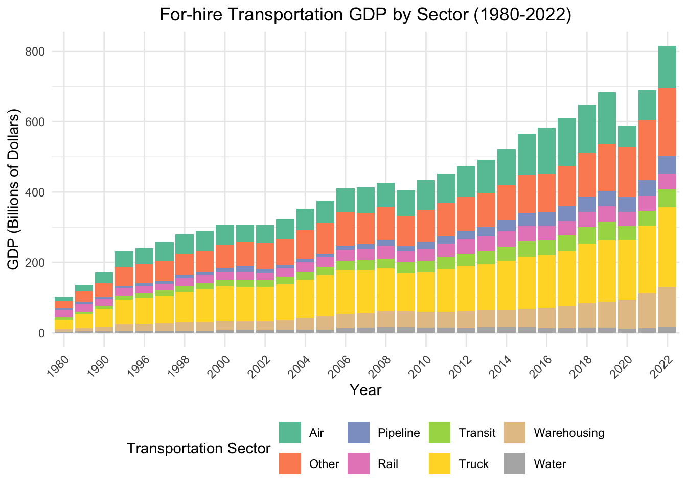
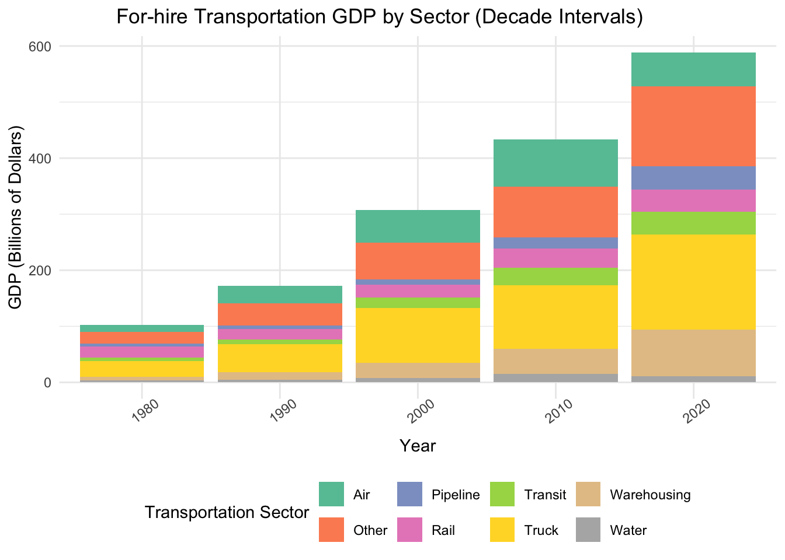
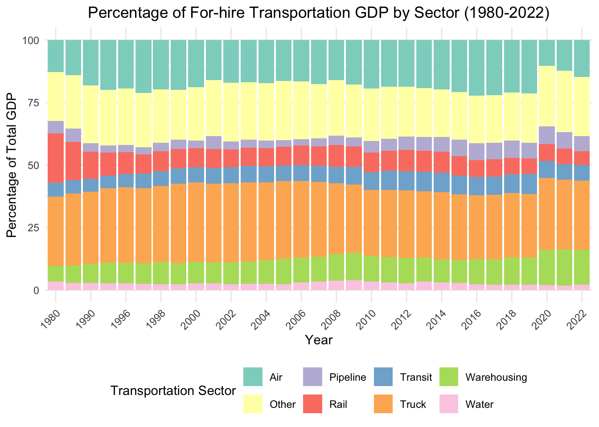
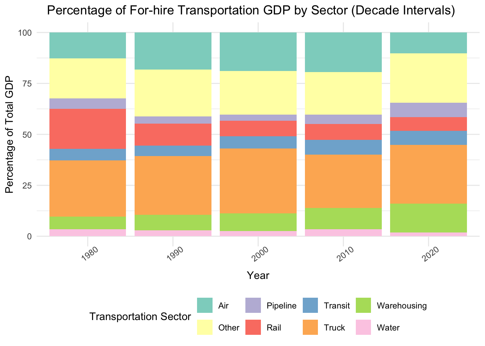

...1 TOTAL U.S. GDP For-hire transportation services GDP, total
Length:31 Min. : 2788 Min. :102.6
Class :character 1st Qu.: 9941 1st Qu.:297.9
Mode :character Median :14474 Median :410.3
Mean :13896 Mean :415.9
3rd Qu.:17878 3rd Qu.:544.3
Max. :25463 Max. :815.0
Air transportation...4 Rail transportation...5 Water transportation...6
Min. : 13.10 Min. :18.60 Min. : 3.500
1st Qu.: 54.63 1st Qu.:22.39 1st Qu.: 6.832
Median : 68.02 Median :32.39 Median :12.710
Mean : 75.00 Mean :31.63 Mean :11.006
3rd Qu.: 91.14 3rd Qu.:40.54 3rd Qu.:14.397
Max. :145.55 Max. :44.59 Max. :18.216
Truck transportation...7 Transit and ground passenger transportation...8
Min. : 28.40 Min. : 5.80
1st Qu.: 94.74 1st Qu.:18.07
Median :116.86 Median :26.29
Mean :117.21 Mean :28.29
3rd Qu.:144.84 3rd Qu.:40.47
Max. :226.12 Max. :54.19
Pipeline transportation...9 Other transportation and support activities...10
Min. : 5.100 Min. : 20.20
1st Qu.: 9.825 1st Qu.: 62.83
Median :14.606 Median : 89.93
Mean :20.780 Mean : 88.99
3rd Qu.:33.517 3rd Qu.:104.03
Max. :48.473 Max. :193.33
Warehousing and storage...11 Percent of U.S. GDP
Min. : 6.40 Mode:logical
1st Qu.: 25.28 NA's:31
Median : 41.28
Mean : 43.01
3rd Qu.: 49.88
Max. :112.56
For-hire transportation services Air transportation...14
Min. :2.793 Min. :0.2870
1st Qu.:2.886 1st Qu.:0.4746
Median :2.977 Median :0.5417
Mean :3.008 Mean :0.5398
3rd Qu.:3.112 3rd Qu.:0.6038
Max. :3.680 Max. :0.6922
Rail transportation...15 Water transportation...16 Truck transportation...17
Min. :0.1751 Min. :0.05337 Min. :0.7544
1st Qu.:0.2125 1st Qu.:0.07031 1st Qu.:0.8040
Median :0.2272 Median :0.07849 Median :0.8568
Mean :0.2530 Mean :0.08183 Mean :0.8621
3rd Qu.:0.2447 3rd Qu.:0.09217 3rd Qu.:0.9135
Max. :0.7245 Max. :0.12553 Max. :1.0186
Transit and ground passenger transportation...18 Pipeline transportation...19
Min. :0.1552 Min. :0.07553
1st Qu.:0.1799 1st Qu.:0.09095
Median :0.1886 Median :0.13439
Mean :0.1973 Mean :0.13827
3rd Qu.:0.2218 3rd Qu.:0.18664
Max. :0.2535 Max. :0.21692
Other transportation and support activities...20 Warehousing and storage...21
Min. :0.5695 Min. :0.2241
1st Qu.:0.6021 1st Qu.:0.2522
Median :0.6423 Median :0.2852
Mean :0.6449 Mean :0.2909
3rd Qu.:0.6829 3rd Qu.:0.3084
Max. :0.7593 Max. :0.4421
Percent of for-hire transportation services GDP Air transportation...23
Mode:logical Min. :10.27
NA's:31 1st Qu.:16.50
Median :18.60
Mean :17.94
3rd Qu.:19.79
Max. :22.18
Rail transportation...24 Water transportation...25 Truck transportation...26
Min. : 5.471 Min. :1.867 Min. :25.39
1st Qu.: 7.139 1st Qu.:2.307 1st Qu.:26.96
Median : 7.790 Median :2.680 Median :28.74
Mean : 8.311 Mean :2.722 Mean :28.70
3rd Qu.: 8.363 3rd Qu.:3.100 3rd Qu.:30.58
Max. :19.688 Max. :3.859 Max. :31.85
Transit and ground passenger transportation...27 Pipeline transportation...28
Min. :5.093 Min. :2.612
1st Qu.:6.045 1st Qu.:3.177
Median :6.367 Median :4.665
Mean :6.570 Mean :4.572
3rd Qu.:7.330 3rd Qu.:5.864
Max. :7.938 Max. :7.111
Other transportation and support activities...29 Warehousing and storage...30
Min. :18.90 Min. : 6.238
1st Qu.:19.88 1st Qu.: 8.572
Median :21.39 Median : 9.611
Mean :21.48 Mean : 9.707
3rd Qu.:22.89 3rd Qu.:10.333
Max. :24.70 Max. :14.342
KEY: R = revised.
Mode:logical
NA's:31
Check for duplicates
duplicated_rows <- dataset[duplicated(dataset), ]# changing col namesclean_names <-c("Year","Total_GDP","Transport_GDP_Total","Air","Rail","Water","Truck","Transit","Pipeline","Other","Warehousing","Percent_GDP","Transport_Services","Air_Pct","Rail_Pct","Water_Pct","Truck_Pct","Transit_Pct","Pipeline_Pct","Other_Pct","Warehousing_Pct","Pct_Transport_GDP","Air_Share","Rail_Share","Water_Share","Truck_Share","Transit_Share","Pipeline_Share","Other_Share","Warehousing_Share")# Assign new column namescolnames(dataset) <- clean_names# Redoing col 1, rows 26:30dataset[26, 1] <-"2017"dataset[27, 1] <-"2018"dataset[28, 1] <-"2019"dataset[29, 1] <-"2020"dataset[30, 1] <-"2021"
Create stacked bar chart
# Select relevant columns and convert to long formattransport_long <- dataset %>%select(Year, Air, Rail, Water, Truck, Transit, Pipeline, Other, Warehousing) %>%pivot_longer(cols =-Year, names_to ="Sector", values_to ="GDP")# Create stacked bar chart for all years# Convert Year to factor for first plot to ensure discrete x-axisp1 <-ggplot(transport_long, aes(x =as.factor(Year), y = GDP, fill = Sector)) +geom_bar(stat ="identity") +labs(title ="For-hire Transportation GDP by Sector (1980-2022)",x ="Year",y ="GDP (Billions of Dollars)",fill ="Transportation Sector") +theme_minimal() +scale_fill_brewer(palette ="Set2") +theme(axis.text.x =element_text(angle =45, hjust =1),plot.title =element_text(hjust =0.5),legend.position ="bottom") +# Show fewer year labels to prevent overcrowdingscale_x_discrete(breaks =function(x) x[seq(1, length(x), by =2)])# Create filtered version showing only decade intervalstransport_long_filtered <- transport_long %>%filter(Year %in%seq(1980, 2022, by =10))p2 <-ggplot(transport_long_filtered, aes(x =as.factor(Year), y = GDP, fill = Sector)) +geom_bar(stat ="identity") +labs(title ="For-hire Transportation GDP by Sector (Decade Intervals)",x ="Year",y ="GDP (Billions of Dollars)",fill ="Transportation Sector") +theme_minimal() +scale_fill_brewer(palette ="Set2") +theme(axis.text.x =element_text(angle =37),plot.title =element_text(hjust =0.3),legend.position ="bottom")# Display both plotsp1

p2

The plot shows a general increase in the total GDP of for-hire transportation gdp of different sectors over time. We can see that the all sectors gace grown gdps over the decades, some winning out more than others. We see initially that the total gdp for all sectors sits well under 200 Billion and for the next 40 years grows by a factor of over 4X. The sector of for-hire that has grown the most over the period of this analysis is the Trucking sector. Followed by Other. We cab see that during the pandemic, Air lost a considerable market share and lost it’s momentum that previously looked like it would get carried by to become a leader amongst all the sectors. This decline makes sense as air travel was not permitted/heavily regulate/discrouraged during the pandameic. We can also see that warehousing is making considerable strides in gdp growth over the past decade.
# Calculate sector percentages for each yeartransport_long_pct <- transport_long %>%group_by(Year) %>%mutate(Percent_GDP = GDP /sum(GDP) *100)# Create stacked bar chart with sector percentages for all yearsp3 <-ggplot(transport_long_pct, aes(x =as.factor(Year), y = Percent_GDP, fill = Sector)) +geom_bar(stat ="identity") +labs(title ="Percentage of For-hire Transportation GDP by Sector (1980-2022)",x ="Year",y ="Percentage of Total GDP",fill ="Transportation Sector") +theme_minimal() +scale_fill_brewer(palette ="Set3") +theme(axis.text.x =element_text(angle =45, hjust =1),plot.title =element_text(hjust =0.5),legend.position ="bottom") +scale_x_discrete(breaks =function(x) x[seq(1, length(x), by =2)])# Create filtered version showing only decade intervals with percentagestransport_long_pct_filtered <- transport_long_pct %>%filter(Year %in%seq(1980, 2022, by =10))p4 <-ggplot(transport_long_pct_filtered, aes(x =as.factor(Year), y = Percent_GDP, fill = Sector)) +geom_bar(stat ="identity") +labs(title ="Percentage of For-hire Transportation GDP by Sector (Decade Intervals)",x ="Year",y ="Percentage of Total GDP",fill ="Transportation Sector") +theme_minimal() +scale_fill_brewer(palette ="Set3") +theme(axis.text.x =element_text(angle =37),plot.title =element_text(hjust =0.3),legend.position ="bottom")# Display the percentage plotsp3

p4

# Analyze the sectors with the highest growthgrowth_analysis <- transport_long_pct %>%group_by(Sector) %>%summarize(Growth = Percent_GDP[Year =="2022"] - Percent_GDP[Year =="1980"]) %>%arrange(desc(Growth))print("Growth Analysis by Sector:")
[1] "Growth Analysis by Sector:"
growth_analysis
# A tibble: 8 × 2
Sector Growth
<chr> <dbl>
1 Warehousing 7.58
2 Other 4.05
3 Air 2.02
4 Pipeline 0.982
5 Transit 0.644
6 Truck 0.0924
7 Water -1.17
8 Rail -14.2
This bar chart displays the percentage distribution of for-hire transportation GDP by sector from 1980 to 2022. I normalised each year to display which sector had the majority share year by year. The chart shows that the trucking sector consistently holds the largest share, while other sectors such as air and rail maintain relatively steady proportions. Warehousing has shown noticeable growth in its GDP share, especially in the most recent years, reflecting its increasing importance.